Masmorras que nunca se repetem
Criptas, cavernas e ruínas montadas na hora: corredores tortos, paredes desabadas, salas escondidas. Cada descida é diferente.
RPG de ação sombrio · Windows e Android
Valcinza caiu na escuridão. Um bardo com um arco e uma maga com um cajado descem até o fundo dela. Toda batalha vira canção — se alguém sobreviver para cantar.
A história
Na noite da tempestade, o fogo desceu sobre Valcinza. Quem não fugiu sumiu nas catacumbas debaixo da praça — e de lá começaram a subir coisas que não deviam andar.
Você é o Menestrel: arco nas costas, alaúde no peito e nenhum motivo para ficar. Mesmo assim você fica. Ao seu lado, a Lia, uma jovem maga que sabe mais sobre aquela escuridão do que gostaria.
“Cada andar que a gente desce, a balada ganha um verso. Só falta saber quem vai cantar o último.”
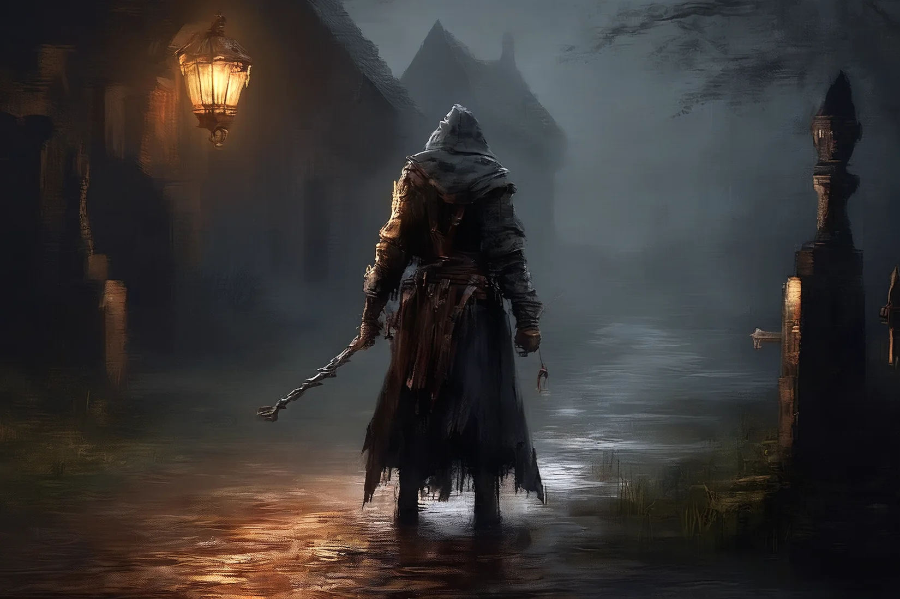
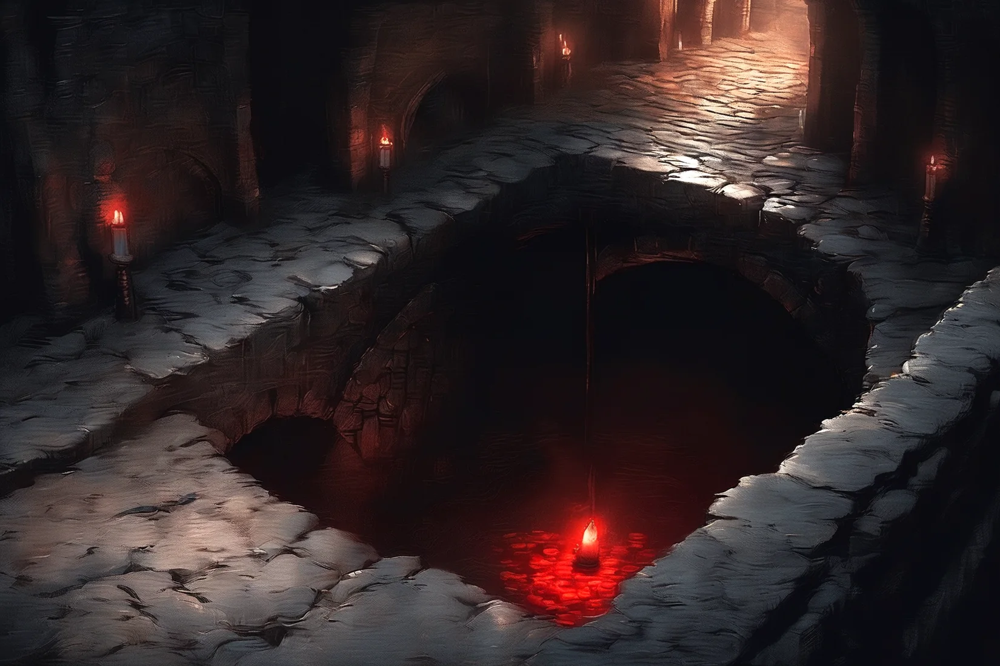
Por que jogar
Criptas, cavernas e ruínas montadas na hora: corredores tortos, paredes desabadas, salas escondidas. Cada descida é diferente.
Esquiva com tempo certo, flechas que perfuram, bolas de fogo, tornados. Os monstros têm poderes próprios — e os chefes, fases.
Comum, mágico, raro e lendário. Afixos sorteados, poderes únicos e equipamento separado para cada herói.
O Menestrel toca canções de guerra e acordes que atordoam. A trilha muda com o lugar, com o combate e com o chefe.
Na mata fechada, a tocha não basta. Passe a liderança para a Lia e deixe o cajado dela abrir caminho na escuridão.
Teclado e mouse no Windows, toque com joystick virtual no Android. Gráficos que se ajustam ao aparelho.
Os heróis
Controle um, o outro luta ao seu lado. Troque a qualquer momento com um toque no retrato.
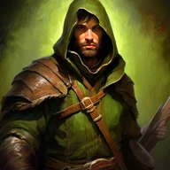
Arqueiro · Bardo
Arco de longe, lâmina de perto e um alaúde para virar a luta. Três árvores de talento: Arquearia, Lâmina e Canções de Poder.
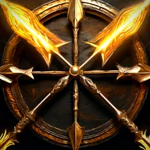
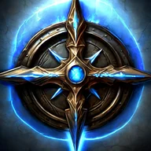
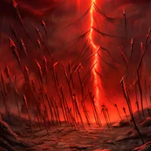
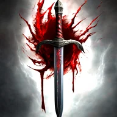
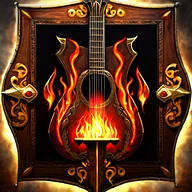
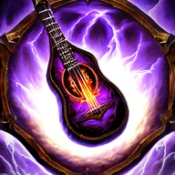
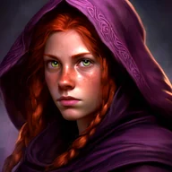
Maga · Elementalista
Cajado, tomo e quatro elementos: Fogo, Água, Terra e Ar. Destrói em área, controla o campo e cura o grupo.
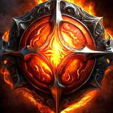
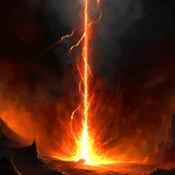
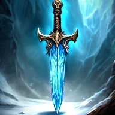
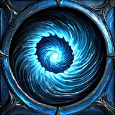
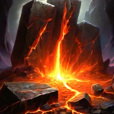
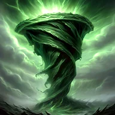
O mundo
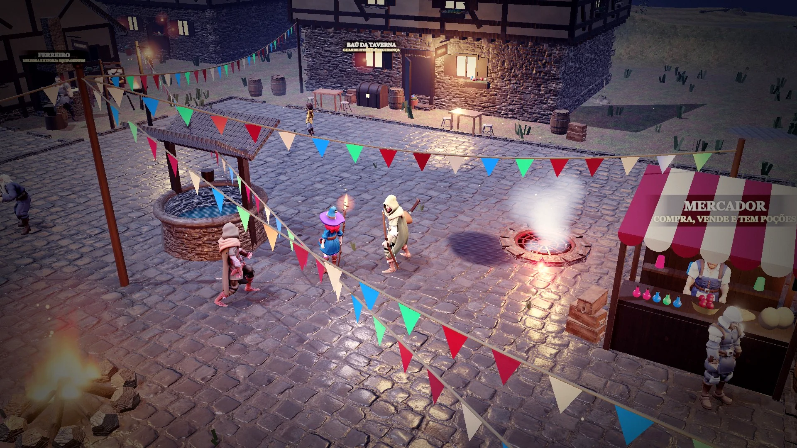
A vila que você vai ver cair e, se tudo der certo, renascer. Ferreiro, mercador, taverna, baú — e uma grade no chão da praça que leva para baixo.
Dez andares de criptas e cavernas geradas a cada descida, com tochas, ossos e armadilhas. No meio do caminho, o Carrasco. No fundo, o Arauto das Cinzas.
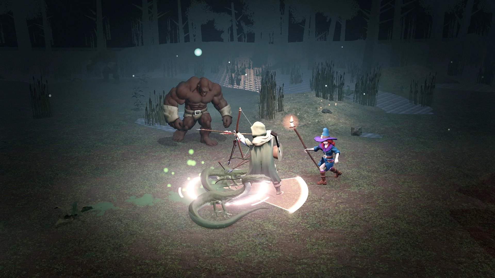
Árvores com cordas penduradas, olhos que acendem entre os troncos, cavernas cavadas nos morros. A névoa esconde o que a tocha não alcança.
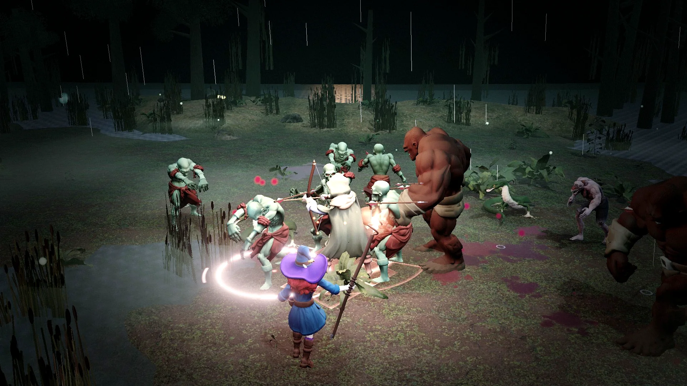
Água parada, sapos que cospem fogo verde, afogados que puxam para o fundo. Do outro lado, Juncal, a vila das palafitas.
Galeria
Imagens tiradas do jogo rodando, sem retoque de cena. Toque para ampliar.
Equipamento
Arcos, cajados, tomos, lâminas, armaduras, anéis e amuletos — com raridade, afixos e, às vezes, um poder lendário que muda o jeito de jogar.
Download
Versão · publicada em . Grátis, sem anúncios, sem cadastro.
Computador ou notebook
Celular ou tablet
Quer conferir se o arquivo é o original? Compare o código SHA-256 do cartão de download com o resultado de certutil -hashfile arquivo.exe SHA256 no Prompt de Comando.
Recomendado: 4 GB de RAM ou mais. Em aparelhos mais simples, use a qualidade gráfica Baixa em Opções.
Dúvidas
Sim. Sem anúncios, sem compras dentro do jogo e sem cadastro. Baixe e jogue.
Não. Depois de instalado, o jogo roda inteiro offline, no PC e no celular.
Fica, automaticamente, no próprio aparelho. Cada aparelho tem o seu salvamento.
O Instalador coloca o jogo no computador com atalhos e desinstalador. A Portátil é um único arquivo que roda de qualquer pasta ou pendrive, sem instalar nada.
Porque o jogo é distribuído direto pelo estúdio, fora das lojas, e ainda não tem assinatura digital paga. O aviso é padrão para esse tipo de arquivo. Você pode conferir o código SHA-256 mostrado em cada download.
Tem. Os capítulos I e II estão completos, e o capítulo III já está a caminho.